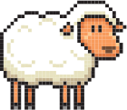

12月動物人氣投票冠軍揭曉！


大象以其智慧和巨大的魅力蟬聯人氣王！長頸鹿優雅的身姿總是令人難以忘懷。而獅子勇猛的王者氣質讓人讚嘆。這些動物都擁有獨特的故事和魅力，誰將在本月成為動物園之星？你最喜歡哪一種動物？快來投票選你最愛的動物！
即日起~1月31日23:59截止
參與投票非常簡單！只需登入你的會員帳號，每天可投三票，不限館別。前往我們的動物園官網，點擊你最喜歡的動物，為它投上珍貴的一票。記得，每個參與者每天可投三票，所以請謹慎選擇，支持你心愛的動物。